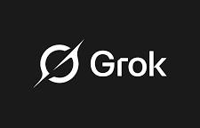
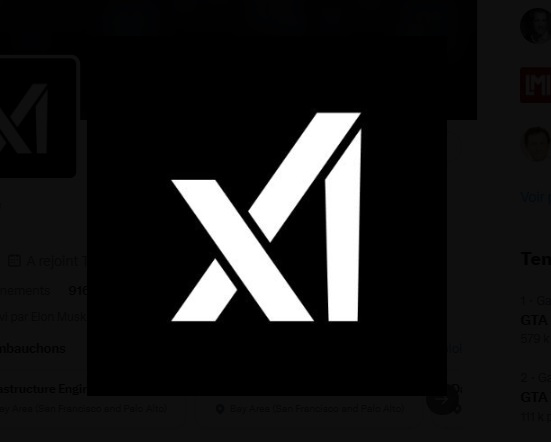

Grok est une intelligence artificielle développée par xAI, la société d'Elon Musk. Lancé en novembre 2023, il se distingue des autres IA par son accès aux informations en temps réel et son ton parfois décalé et humoristique.
Le nom "Grok" vient d'un roman de science-fiction de 1961 de Robert A. Heinlein, où il signifie une forme de compréhension profonde et intuitive.
Grok peut faire beaucoup de choses :
xAI a été fondée en 2023 par Elon Musk après qu'il ait quitté le conseil d'administration d'OpenAI. La mission de xAI est de comprendre l'univers et de faire avancer la science grâce à l'IA. En 2025, xAI est valorisée à plus de 50 milliards de dollars.
Depuis son lancement, Grok a évolué rapidement avec plusieurs versions :
| Version | Année | Nouveautés |
|---|---|---|
| Grok 1 | 2023 | Première version, réservée aux abonnés X Premium |
| Grok 2 | 2024 | Génération d'images, disponible gratuitement avec des limites |
| Grok 3 | 2025 | Meilleur raisonnement, mode vocal amélioré |
| Grok 4 | 2025 | Version la plus puissante, réservée aux abonnés SuperGrok |
Il existe plusieurs façons d'utiliser Grok selon son budget :

